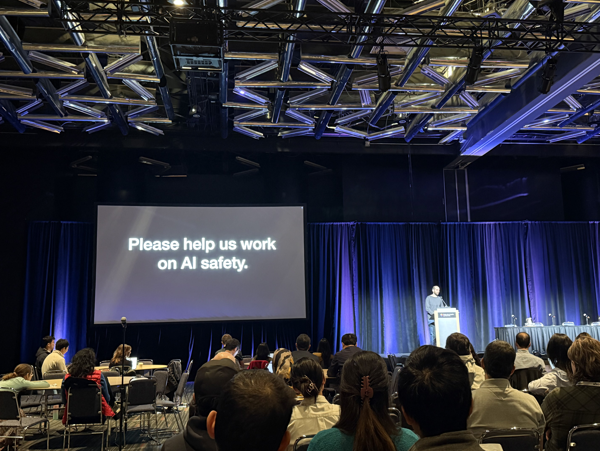
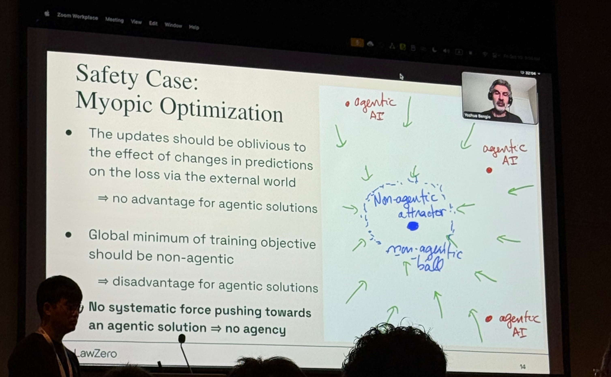

I had the privilege of attending and presenting our work "Multilingual and Multi-Accent Jailbreaking of Audio LLMs" [1] at this year's Conference on Language Models (COLM) 2025, held in Montreal, Canada. Although the conference took place in October and I am writing this reflection a couple of months later, many of the ideas and discussions remain vivid. In that sense, the experience was genuinely impactful. In this post, I would like to reflect on some of the key lessons and perspectives I took away from COLM 2025.
Rethinking Safety in Language Models
Invited talk by Nicholas Carlini, "Are the Harms and Risks of LLMs Worth It?", encouraging the audience to reflect on the safety implications of large language models. Photo by Jaechul Roh.
One of the aspects I particularly appreciated about COLM was its atmosphere. Compared to larger conferences, it felt more intimate and less crowded, yet the overall quality of the papers was remarkably high. The invited talks featured outstanding researchers from around the world, but the one that resonated most strongly with my own research interests was Nicholas Carlini's talk.
What stood out immediately was that Carlini (widely known for his work and talk on adversarial machine learning) was invited to speak at a conference focused specifically on language models, rather than a general machine learning or security venue. This choice itself felt deliberate and refreshing, and it highlighted COLM's openness to rethinking the boundaries of what "language model research" encompasses.
Carlini began his talk by acknowledging that many in the audience might expect a discussion centered on adversarial attacks. Instead, he shifted the attention toward a broader and more unsettling topic, which is safety. Rather than focusing solely on jailbreaking models or bypassing safeguards, he raised a deeper question—what does it actually mean to make a model safe?
To ground this discussion, he referenced several real-world legal cases, including tragic incidents in which vulnerable individuals, including children [2, 3], were reportedly influenced by interactions with AI systems, with devastating consequences. These cases, which have led to lawsuits against AI developers, underscore the seriousness of the issue and the real human stakes involved.
This perspective prompted me to rethink how we frame threats and risks in language models. Much of the existing discourse emphasizes extreme or stylized scenarios, such as deliberately asking the model "how to build a bomb". While these cases are undeniably important, they may not capture the most common or realistic ways harm can arise. Instead, we may need to pay greater attention to subtle, long-term, and socially embedded interactions, where models influence users' decisions, emotions, or beliefs in ways that are harder to detect but potentially more harmful.
From this angle, safety is no longer just about preventing forbidden outputs, but about understanding how language models participate in human lives and how their behavior, even when seemingly benign, can pose real risks. For me, this was one of the most thought-provoking takeaways from COLM, and it continues to shape how I think about safety and threat models in my own research.
This, in many ways, is also the beauty of our field. Progress is often driven by carefully designing and proposing new threat models that capture realistic and previously overlooked scenarios, alongside principled methods and algorithms to address them. By clearly motivating why a proposed threat model reflects plausible real-world risks, we not only persuade readers of its relevance but also provide the necessary context for understanding why a particular technical approach is needed in the first place.
Generative Interface
Yoshua Bengio delivering the opening keynote at the Workshop on AI Agents: Capabilities and Safety. Photo by Jaechul Roh.
Workshops have always been one of my favorite parts of academic conferences. They tend to be less crowded and more focused, which often leads to deeper discussions and more direct engagement with emerging ideas. At COLM, I planned much of my day around attending the Workshop on AI Agents: Capabilities and Safety.
The workshop opened with a keynote by Yoshua Bengio, who has recently been emphasizing the importance of alignment and safety in advanced AI systems, including through the establishment of the nonprofit research organization LawZero.
One of the most engaging moments of the workshop came during the panel discussion on the future of AI agents, particularly around privacy and security implications. A highlight for me was when Diyi raised a critical question about how humans should interact with AI systems. She argued that the current text-based user interface of systems like ChatGPT may not be the most effective or expressive way for users to understand and engage with model outputs. This discussion connected directly to her recent work on "Generative Interfaces for Language Models" [4], which introduces generative interfaces that move beyond static text by turning model responses into interactive artifacts, enabling users to explore outputs dynamically and gain a deeper understanding of how models reason and respond.
At first glance, you may wonder how this is related to privacy or security. However, every new modality and interaction paradigm introduces new attack surfaces and threat models. More importantly, this line of work invites a broader and more constructive question: what is the most effective way for humans to interact with intelligent systems? How can we design interfaces that improve user understanding, trust, and control without introducing unintended risks?
For me, this paper represents a promising starting point for rethinking human–machine interaction more fundamentally. These emerging interfaces offer exciting opportunities, but they also demand careful threat modeling and responsible design. We are actively investigating these questions in our lab, so stay tuned for upcoming projects.
Conclusion

Our poster on "Multilingual and Multi-Accent Jailbreaking of Audio LLMs". Photo by Jaechul Roh.
Overall, COLM 2025 reinforced for me how rapidly the scope of language model research is evolving, both technically and socially. From rethinking safety beyond narrowly defined forbidden behaviors to exploring new interaction paradigms such as generative interfaces, the conference highlighted a shift toward more realistic, human-centered perspectives on AI risk and design. What stood out most was the growing recognition that safety, privacy, and usability are deeply intertwined: how models behave, how users interact with them, and how systems are deployed all shape the risks they pose. As language models become increasingly embedded in everyday life, developing principled threat models, thoughtful interfaces, and robust safeguards will be essential. These themes strongly resonate with our lab's ongoing work, and COLM provided both validation and inspiration as we continue to explore these challenges at the intersection of language models, safety, and human–machine interaction.
References
- Roh, Jaechul, Virat Shejwalkar, and Amir Houmansadr. "Multilingual and multi-accent jailbreaking of audio llms." arXiv preprint arXiv:2504.01094 (2025).
- NBC News. "OpenAI Denies Allegation ChatGPT Is Responsible for Teenager's Death in Adam Raine Lawsuit." NBC News, 26 Nov. 2025, https://www.nbcnews.com/tech/tech-news/openai-denies-allegation-chatgpt-teenagers-death-adam-raine-lawsuit-rcna245946.
- CNN. "OpenAI Faces Lawsuit Over Alleged Role of ChatGPT in Teen's Suicide." CNN, 6 Nov. 2025, https://www.cnn.com/2025/11/06/us/openai-chatgpt-suicide-lawsuit-invs-vis.
- Chen, Jiaqi, et al. "Generative interfaces for language models." arXiv preprint arXiv:2508.19227 (2025).